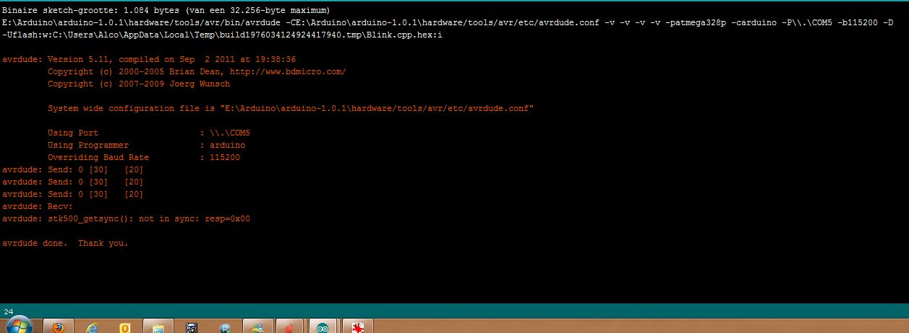
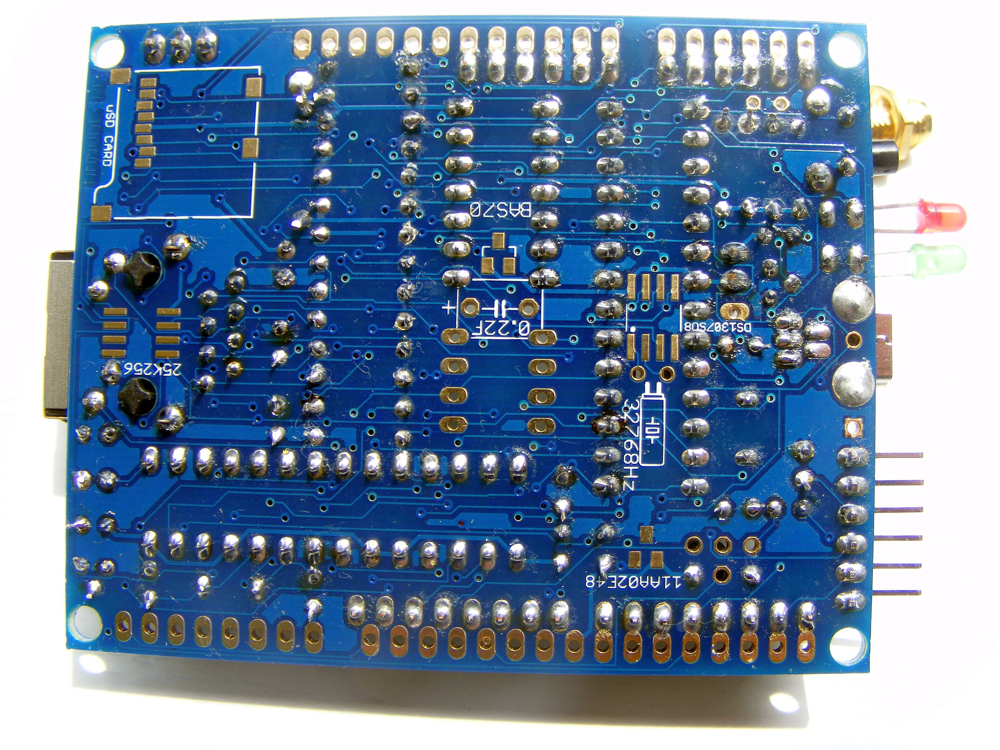
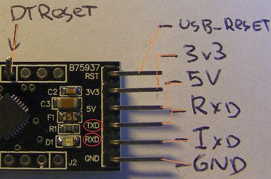

He guys,
I received my fresh bought nanodeRF last week and yesterday I decide to build it. So I prepared my desk, bought nice 0.5mm soldering tin and build it in about 2 hours with the excelent step-by-step buildguide without any problem.
I did some testing with my multimeter and get nice clean readings back. 3.30v and 5.1v at all the places. So I put on the IC's and hook it up to the FTDI cable. But now the pain begins..
I suspected an blink from the red LED onboard..but it didn't.. So I started the IDE suite and tried to upload an simple test sketch. But I'm receiving an connection error like this(click on thumbnail):

So thats not good.
So I disconnected the nanodeRF and started some more testing with my multimeter.
- At the Atmel 328 I found an nice 3.30v on the input vcc side (pin7) and also at the REF pins (20&22) an nice 3.30v
- At the RM12B chip also good 3.30v Readings (messured on the IC pins)
- The ethernetchip ENC28J60 gives also an 3.30 reading at pin 7
- When I connect an LAN cable..the leds on the magjack also light-up..geen and some blinking of the yellow signal led..
- I double checked that the extra 10uF cap is on the right pins 2&6
- I checked all the resistors with my multimeter and color-codings from the buildguide.
- I received 6x 10K resistor and not 7 so I put one from my own into the board near the reset switch)
I did also made an test on the leds voltage. there it's not 2V but only 0.88v! with the negative pin on pin 13 of the 74HCT125 IC so thats why the don't light up.. So I checked the 270R resistors..and the where fine.. and when I measured the voltage from the FTDI ground pin with those resistors.. and it's 3.30v. The 74HCT125 also gets an normal 3.30v at pin 2 and 7.. But it don't get an signal from the atmel chip? can I measure that somehow without an scope?
Can somebody help me with debugging this thing? I'm "new" to arduino but I know the basics of electronics and measurements.. I put an album with more detail photo's online at:
http://img62.imageshack.us/slideshow/webplayer.php?id=nanodesolderingdon...
{kind=link}
http://imageshack.us/g/62/nanodesolderingdone.jpg/
{kind=link}
 |
 |
 |
 |
 |
 |
Re: NanodeRF not responding after build (soldering) job. (SOLVED = faulty ebay USB UART adapter)
Imageshack does not work for me - I cannot read the error messages. Can you copy and paste the messages as text into your post, or attach a good screenshot (.png ?) to your post.
(Click "File attachments" and when you have uploaded the picture, remember to click "List" to make the attachment visible ).
Re: NanodeRF not responding after build (soldering) job. (SOLVED = faulty ebay USB UART adapter)
It's a default error no sync: (get it on win7 arduino IDE and also on ubuntu IDE), set the board to an arduino ONE and confirmed the right COM port at windows.

and I also attached 2 fotos of the board.
To get it clear, i don't get any "alive" signal from the Atmel mega328. and the led's are off (except those on the ethernet magjack) but al the voltage readings are OK..

Re: NanodeRF not responding after build (soldering) job. (SOLVED = faulty ebay USB UART adapter)
Do you have a 5 V FTDI adapter? (The 3.3 V version does not work).
It is possible that you do not have a bootloader. Glyn Hudson says that all those bought from the OpenEnergyMonitor shop have a bootloader loaded and tested, but no test sketch is loaded. I had the same problem. I cannot remember the details now, however I loaded the bootloader and then I could load a test sketch.
There are more possible causes here: http://www.ladyada.net/learn/arduino/help.html
Re: NanodeRF not responding after build (soldering) job. (SOLVED = faulty ebay USB UART adapter)
mmmm no default sketch loaded, so I can't aspect an blinking green or red led by default . I decided to buy an new FTDI adapter (The one that I own is a 2 euro FTDI converter from china,ebay and I don't own an other arduino so I can't check if it's faulty or not..) from the jeelabs shop its one with the FT232R chip on it, that's the identical chip as on an arduino UNO.
. I decided to buy an new FTDI adapter (The one that I own is a 2 euro FTDI converter from china,ebay and I don't own an other arduino so I can't check if it's faulty or not..) from the jeelabs shop its one with the FT232R chip on it, that's the identical chip as on an arduino UNO.
I hope to receive it in a couple of days. (jeelabs is also a Dutch company so....) and will test my NanodeRF with that again.
Re: NanodeRF not responding after build (soldering) job. (SOLVED = faulty ebay USB UART adapter)
Have you tried to load the bootloader? The one loaded by the shop is the Arduino Optiboot bootloader..
Have you looked in the Arduino IDE Help => Troubleshooting?
Re: NanodeRF not responding after build (soldering) job. (SOLVED = faulty ebay USB UART adapter)
Finaly after a lot of google-ing and testing I found the solution, it's stupid but the ebay "made in china" FTDI adapter with the CP2102 chipset. (thats the same chipset as on the nanodeshop FTDI adapter) has an wrong PCB label on it!
The RXD header is the TXD and likewise the TXD is the RXD on the adapter. very very frustrating! found the solution thanks so this guys weblog: http://whatididwas.blogspot.nl/2011/12/cp2102-usb-to-rs232-for-arduino-c...
So I run my first sketch test to blink the 2 leds and YES it works fine!
next step: test my sensingshield onto the nanodeRF with an CT sensor.
Re: NanodeRF not responding after build (soldering) job. (SOLVED = faulty ebay USB UART adapter)
Excellent detective work there. I don't think I would ever have found that via this thread.
Re: NanodeRF not responding after build (soldering) job. (SOLVED = faulty ebay USB UART adapter)
I've made some pictures from the faulty adapter and a simple drawing:

So you have to make an extra header pin on the J3 DTR hole for getting a working RESET pin. Because the RST pin isn't resetting your arduino but it's resetting the CP2102 USB chip!.
and the RXD pin is not RXD but TXD and visa versa.
Re: NanodeRF not responding after build (soldering) job. (SOLVED = faulty ebay USB UART adapter)
Thank you for posting that. I think the moral of the tale is - buy from here http://shop.openenergymonitor.com/programmer-usb-to-uart/